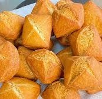

Isku qas bur, sonkor, qasac, iyo cusbo. Ku dar caano tartiib tartiib ah oo isku qas ilaa uu cajiin jilicsan noqdo. Cajiinka ku daa meel diirran 15 daqiiqo. Cajiinka ka samee goobo yaryar ama jarjar afar gees leh. Saliid kulee digsiga oo ku shiil ilaa ay bunni noqdaan. Saliidda ka saar oo ku dhig warqad si saliidda u daadato.